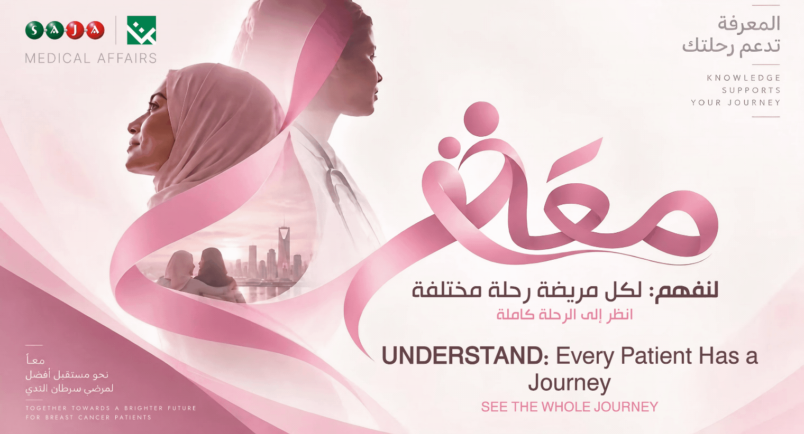

| Dear Colleagues, |
A breast cancer diagnosis is not one moment—it is the beginning of a journey.
From an abnormal finding to diagnostic imaging, tissue testing and treatment planning, every patient’s path can be different. Treatment may include surgery, radiotherapy, hormonal therapy, chemotherapy and targeted therapies, often delivered through a multidisciplinary team.
But the journey extends beyond treating the tumor.
Comprehensive breast cancer care can also involve rehabilitation, symptom management, emotional and psychosocial support, follow-up care and, when needed, palliative care.
Behind every treatment plan is a person balancing health, family, work, emotions and everyday life.
| زملاءنا الأعزاء، |
تشخيص سرطان الثدي ليس لحظة واحدة، بل هو بداية رحلة متكاملة.
من اكتشاف تغير غير طبيعي، إلى التصوير والفحوصات وأخذ العينات وتحديد خطة العلاج، قد تختلف رحلة كل مريضة عن الأخرى. وقد تشمل خيارات العلاج الجراحة، والعلاج الإشعاعي، والعلاج الهرموني، والعلاج الكيميائي، والعلاجات الموجهة، وغالبًا ما تُدار الخطة من خلال فريق طبي متعدد التخصصات.
لكن الرحلة لا تتوقف عند علاج الورم.
فالرعاية المتكاملة قد تشمل أيضًا إعادة التأهيل، والسيطرة على الأعراض، والدعم النفسي والاجتماعي، والمتابعة بعد العلاج، والرعاية التلطيفية عند الحاجة.
خلف كل خطة علاجية هناك إنسانة تحاول التوازن بين صحتها وأسرتها وعملها ومشاعرها وتفاصيل حياتها اليومية.
| Understanding the Journey, Together |
| معًا نفهم الرحلة |
|
|
|
 | References | المراجع
|
|  |